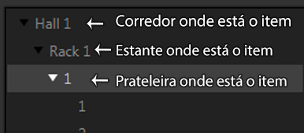

Estoque
Todos os itens que estarão no estoque, poderá ser acessado na Tela "Estoque".
Mapa de Estoque
Onde é armazenado a informação fisica dos itens armazenados no estoque.

Nesta tela é possivel mapear o seu estoque de acordo com os corredores, estantes e prateleiras que deseja fazer a inclusão.